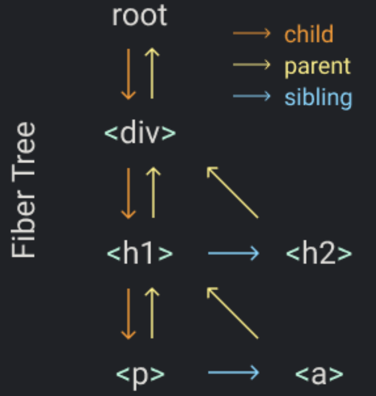

上图的箭头也表明了 fiber 的渲染过程，渲染过程详细描述如下：
- 从 root 开始，找到第一个子节点 div;
- 找到 div 的第一个子节点 h1；
- 找到 h1 的第一个子节点 p；
- 找 p 的第一个子节点，如无子节点，则找下一个兄弟节点，找到 p 的兄弟节点 a；
- 找 a 的第一个子节点，如无子节点，也无兄弟节点，则找它的父节点的下一个兄弟节点，找到 a 的 父节点的兄弟节点 h2；
- 找 h2 的第一个子节点，找不到，找兄弟节点，找不到，找父节点 div 的兄弟节点，也找不到，继续找 div 的父节点的兄弟节点，找到 root；
- 第 6 步已经找到了 root 节点，渲染已全部完成。